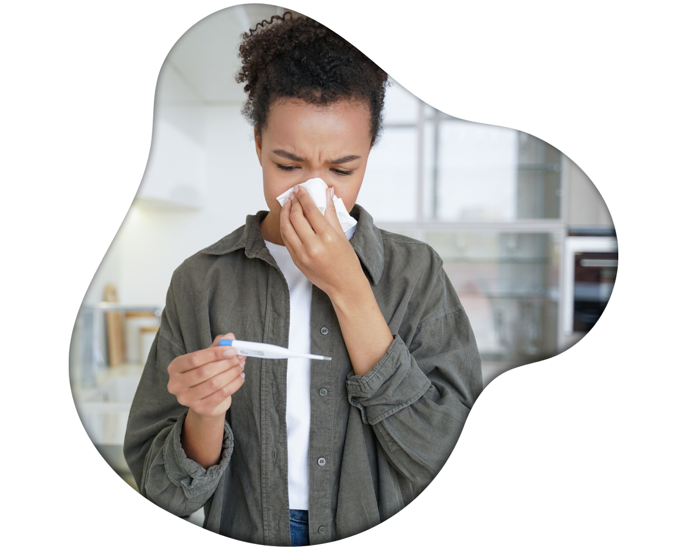

Biologiska arbetsmiljörisker
Exempel på arbetsplatser där det är vanligt att smittrisker förekommer i arbetsmiljön:
- Sjukhusavdelningar – Smitta från patienter eller omgivningen
- Sjukhuslaboratorier – Smitta från patientprover
- Veterinärverksamhet och djurvård – Smitta från djuren (zoonoser)
- Förskolor – Smitta från barnen
- Lantbruk – Smitta från djuren eller där djur har vistats (zoonoser)
- Särskilda boenden (SÄBO), hemtjänst – Smitta från brukare/boende
- Avloppsanläggningar – Smitta från avloppsvattnet
- Utomhusarbetsplatser – Smitta från djur eller deras avföring eller från insekter och spindeldjur
